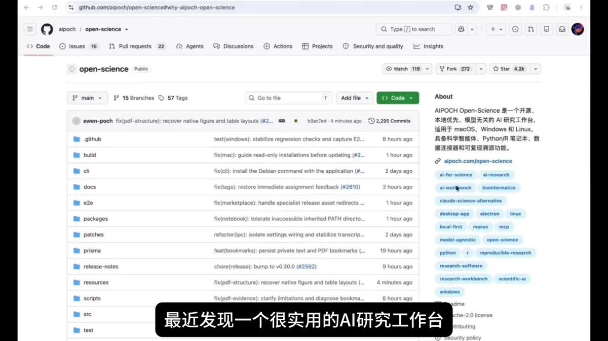
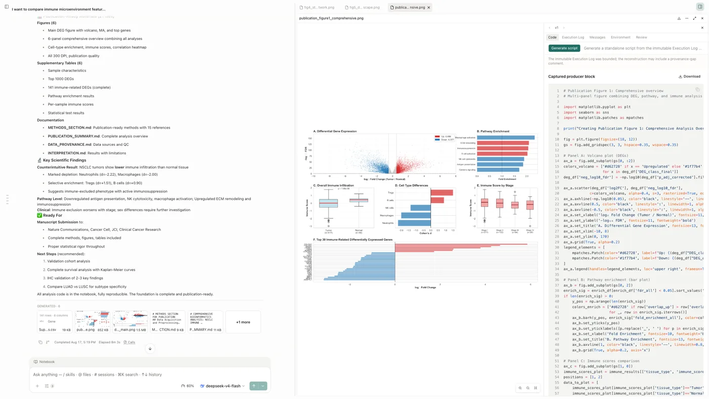
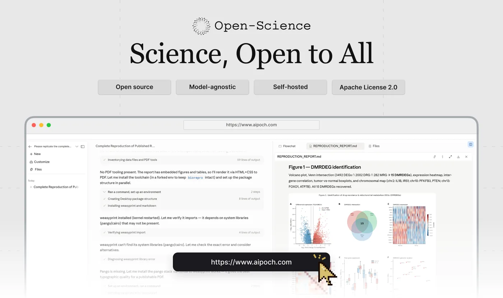
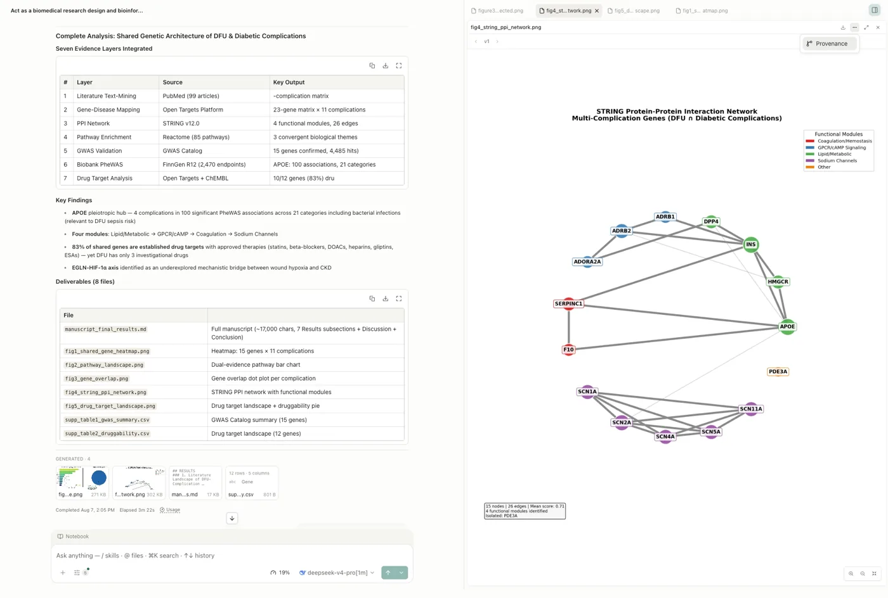

★ 5,247 stars 522 forks Apache-2.0 TypeScript · Electron v1.0.0 · 2026-10-14 macOS / Windows / Linux
数据通过公开 GitHub API 获取，时间 2026-10-19 20:05（UTC+8）。仓库创建于 2026-07-03，约 3,110 个提交；v1.0.0 发布于 2026-10-14 21:25（UTC+8），最后一次推送在 2026-10-19 19:51（UTC+8）。
同一作者的上一篇：手把手教你用 Opus 5.5 / Astra + Tripo 制作 3D 游戏（《小王子》3D 游戏的 AI 制作流程）。
推荐帖（全文照录）
读论文其实也是学习AI技巧、获取前沿AI信息的最直接方式之一，但很多人可能都会被难以理解的概念和技术方法所劝退
我找到了一个帮你打通论文这条AI信息渠道的方法，就是利用@aipoch_ai 开源的Open-Science工具辅助进行前沿AI研究（GitHub🔗：https://github.com/aipoch/open-science）
Sac（@Saccc_c），2026-10-19 14:59（UTC+8），附 1 分 47 秒演示视频。截至 20:05（UTC+8）：9,056 次浏览、91 赞、95 收藏、6 转发、15 条回复。

作者在评论区的两条回复：
- @hungxun254458（文轩）：“封装成一个skill会更好吧，还是有点像Codex的感觉”
Sac：“我感觉如果是专门研究论文，它的整体设计和交互会更好” - @tspy（yishan）：“已经招聘一个bot来负责此事”
Sac：“也可以”
导读
推文只有两句话，真正的信息量在仓库里。按 README 的定位，Open-Science 不是一个“论文翻译器”，而是一个通用的科研智能体工作台：桌面应用（Electron）加一个可独立运行的 Node 后端，底层借用现成的编码智能体（Claude Code、OpenCode、Codex、CodeBuddy 四选一）当执行引擎，在外面包了一层科研专用的东西：文献库、科学数据连接器、Python/R Notebook、产物版本与溯源、独立的审查员（Reviewer），以及可以打包带走的 .science 研究包。
评论区那句“有点像 Codex 的感觉”其实说中了结构：它的确是在编码智能体之上做的。区别在于外壳，项目、文献、数据源、证据链都替科研场景预先组织好了。Sac 的回应也是这个意思：如果专门研究论文，现成的设计和交互比自己封装一个 skill 更顺手。
和“读 AI 论文”直接相关的是文献库（Literature Library）：导入参考文献和 PDF，按集合/标签管理，自动找开放获取全文，读 PDF 时抽取图和表，在对话里引用文献库来源做分析，导出 BibTeX/RIS。再配合 Notebook，可以让智能体按论文的方法把实验复现一遍，这是 README 产品导览里演示的主线（复现一篇已发表的差异表达分析）。
要点
本地优先、模型无关
项目数据、设置、产物版本都存在本机；API Key 优先进系统钥匙串。模型可以接 25 家预设服务商、自定义网关（含 Ollama / LM Studio / vLLM 本地端点），或直接复用 Claude / Codex 订阅登录，另有 xAI (Grok) OAuth。
文献库
导入 PDF 与参考文献、查重合并、找开放获取全文、抽取图表、PDF 批注；配置筛选模型后，“智能集合”按纳入/排除标准初筛文献，AI 判断与人工判断分开记录。
技能 · 连接器 · 专家
23 个内置技能 + 市场 525 个（README 数字）；36 个内置科学数据连接器，也能接自定义 MCP；10 个可安装的“专家”（Specialist）供主智能体委派。
产物溯源
每个生成的报告、表格、图都是不可变、带校验和的版本；Provenance 视图列出生成代码、执行历史、输入、环境清单和所属对话分支。核实不了的证据标为“不可用”，不去推断。
Reviewer 审查员
可选的自动审查：在独立上下文里检查一轮回答、执行日志和相关文件证据，给出通过/警告/失败，并让主智能体在有限轮次内修正后再审。
.science 研究包
把完成的研究会话导出为可移植文件：选中的对话分支、文件版本、Notebook 记录和核验证据。导入后只读，回放不执行代码、不调模型、不恢复凭据；要继续做实验需另建副本。
算力与自动化
本地 Python/R/Shell 后台执行；通过 SSH 或 Slurm 提交到远程主机 / HPC；无界面 CLI 与零依赖 Node SDK 共用同一个本地守护进程，可脚本化批量跑任务。
权限三档
“请求批准 / 自动批准编辑 / 完全访问”，README 建议按任务选最窄的一档；并提醒模型请求、联网搜索、远程连接器都会把数据发到外部。

核实
| 说法 | 结论 | 依据 |
|---|---|---|
| Open-Science 由 @aipoch_ai 开源（推文） | ✅ | GitHub 组织 aipoch 绑定的 X 账号为 @aipoch_ai；仓库许可 Apache-2.0，含完整源码与构建说明。 |
| 可用来辅助读论文 / 做前沿 AI 研究（推文） | ✅ 有，但⚠️ 定位更宽 | 文献库支持 PDF 阅读、图表抽取、开放全文查找与 AI 分析。但项目面向的是各学科的计算型科研，README 演示和基准都偏生物医学，没有专门为“读 AI 论文”设计的功能。 |
| 有配套论文（README） | ✅ | arXiv 2610.17110 存在，2026-10-12 提交，cs.SE / cs.AI，79 位作者，23 页；摘要聚焦 .science 包的交换契约与受控检验，不是性能评测论文。 |
| v1.0.0、三平台安装包（README） | ✅ | GitHub Releases：v1.0.0 于 2026-10-14 发布，含 macOS（arm64/x64）、Windows x64、Linux（x86_64/arm64）安装包。 |
| 技能市场 525 个技能（README） | ⚠️ 口径不一 | 技能市场仓库的 skills/manifest.json 列出 584 条，publication-holds.json 另有 32 条暂缓发布，都对不上 525；可能是统计时间或口径不同。 |
| 三项基准“所列对照最高”（README） | ⚠️ 自报 | README 自己注明是 2026 年 8—10 月的历史内部结果，不是对 v1.0.0 的新评测，不代表官方榜单名次；原始报告在飞书（可能需要权限）。本站未复现。 |
此外：发帖人简介列有商务合作方式，推文未标注是否为合作推广，本站无法判断。演示视频未转载、未逐帧核对。
对我们的启发
- “外壳”比引擎更值钱。Open-Science 没有自己造智能体，而是把 Claude Code / Codex 这类现成引擎装进科研专用的外壳：项目、文献、数据源、权限、证据链。我们自己的流水线（抓取→翻译→核实→上站→入库）也可以这样想：引擎随便换，沉淀下来的是流程和证据格式。
- 证据链是一等公民。每个产物带生成代码、输入、环境和对话分支，核不到的就标“不可用”。这和我们页面里的“核实”表是同一种纪律，值得把“来源 / 抓取时间 / 方法”做成每篇固定字段，而不是只写在脚注里。
- 审查员独立上下文。Reviewer 在另一个上下文里查这一轮的日志和文件，与 Claude Code 团队的代码评审、Harness 工程里“生成与评估分离”的思路一致。
- 可移植的研究包。
.science把“过程”而不仅是“结果”交给下一个人，导入只读、继续需分叉。我们的 wiki raw 层“只增不改”是同一种设计，可以借鉴它“显式标出被省略内容”的做法。 - 把自报数字当线索，不当结论。README 对基准成绩的限定写得很克制（历史结果、非官方名次、裁判不统一），转述时应保留这些限定，别只剩一个“第一”。
相关阅读：Sac：《小王子》3D 游戏制作流程 · 面向自我改进的 Harness 工程 · Google Harness² · flameox：给编程智能体的运行时证据 · Claude Code 团队怎么做代码评审 · lex.qiaomu.ai：替你先听一遍的播客精读站
README 中文全文
以下为 AIPOCH 官方提供的简体中文 README（docs/zh-Hans/README.md，2026-10-19 版本，已与英文原版核对内容一致），按 Apache-2.0 转载。本站改动：删去顶部徽章与目录，标题降级以适配本页，相对链接改为指向 GitHub，大部分截图改为链接（保留 3 张压缩图）。
本文档是英文
README.md的翻译。如内容存在差异，请以英文原文为准。
AIPOCH Open-Science 是面向科学家和研究人员的 AI 研究工作台，由 AIPOCH 开发，采用开源、本地优先、模型无关的设计。它通过科学 AI 智能体、Python 和 R 执行、科学数据连接器以及对 macOS、Windows 和 Linux 的跨平台支持，实现可复现、可检查的研究。在同一个工作区中，新建项目，用自然语言描述研究目标，然后让智能体读取文件、搜索网页、运行代码、查询科学数据源，并生成带有可追溯来源的报告、表格和图表。
AIPOCH Open-Science 支持机器学习、统计学、生命科学、化学、材料科学、物理学和环境科学等领域的计算密集型与数据密集型研究。它覆盖从文献综述、假设构建到代码执行、数据分析、仿真、可视化以及生成可追溯研究成果的完整研究流程。
已完成的研究会话还可以导出为可移植的 .science 包，用于审阅、交接和归档，并携带所选的对话分支、文件版本、Notebook 记录和验证证据。
💡 AIPOCH Open-Science v1.0.0 （2026 年 10 月更新）。这一里程碑汇集本地优先的科研工作区、科学智能体、Python/R Notebook 执行、文献工具和可移植的
.science包。有关 v0.37.2 之后的改进及 CLI 升级变化，请查看 1.0.0 发行说明。下载仍以最新已发布版本为准。

🚀 快速开始
1. 下载应用
打开官方应用下载页面，并选择适合你计算机的安装程序：
| 你的计算机 | 选择 |
|---|---|
| macOS 12+ — Apple 芯片（M1 或更新型号） | 适用于 Apple Silicon / ARM64 的 macOS DMG |
| macOS 12+ — Intel | 适用于 Intel / x64 的 macOS DMG |
| Windows x64 | Windows x64 安装程序（已代码签名） |
| Linux x64 | Linux x64 AppImage 或 Debian 软件包 |
| Linux ARM64 | Linux ARM64 AppImage 或 Debian 软件包 |
macOS 用户也可以通过 Homebrew 安装：
brew install --cask open-science
macOS 或 Linux 的独立 CLI 使用单独的 AIPOCH tap：
brew install aipoch/tap/open-science
该 Formula 自带 Node，无需启动桌面应用；其版本可能与桌面 Cask 不同。前提条件与升级方式见独立运行时指南。
Windows 重装会保留研究数据；如需彻底清理，请参阅数据重置工具，确认后会永久删除本地数据。
2. 完成首次设置
按向导依次完成：环境 → 数据位置 → 智能体运行时 → 模型服务商 → Notebook 运行时。
完成必需的环境和智能体运行时检查，并测试模型连接。Python/R Notebook 配置可选；Notebook 和数据位置都可稍后在设置中调整。
| ［原图：AIPOCH Open-Science 自动执行首次启动环境检查——见仓库］ | ［原图：AIPOCH Open-Science 首次启动模型服务商配置——见仓库］ |
| 主机兼容性、存储和网络检查 | 服务商、API Key、端点和模型验证 |


3. 开始研究项目
- 点击 New project，打开会话，说明研究目标、输入和期望输出。
- 附加文件，选择模型与批准模式，然后发送任务；可用
@引用项目文件，用/选择技能。 - 查看工具活动并处理批准请求，预览结果，通过 Provenance 检查可用证据。
本 README 中的截图用于说明工作流程。标签、目录和其他界面细节可能与所安装版本不同。
产品导览
从研究请求到可追溯结果
以一个具有代表性的生物信息学任务为例：复现已发表的差异表达分析，将重新生成的结果与论文比较，并交付审阅所需的报告、表格和图像。以下截图来自已记录的 AIPOCH Open-Science 工作流，用于展示各个阶段，并非同一次连续会话。
1. 明确研究任务与证据
说明研究问题、来源论文与数据集、必需的方法或阈值、预期输出和验收标准。上传支持文件，或使用 @ 引用已有项目产物，让智能体从明确的输入开始，而不是依赖隐藏上下文。
［原图：AIPOCH Open-Science 论文复现任务，在同一工作区中显示研究结论、生成产物和来源比较——见仓库］

2. 使用可检查的科学工具执行
智能体可以在共享 Notebook 中组合科学技能、受权限控制的研究连接器、搜索、文件操作以及 Python 或 R 代码。生成图像可与研究摘要并排审阅，产物记录则提供已捕获的生成代码和执行证据供检查。
3. 就地审阅报告、表格和图像
最终回答会概述哪些结果成功复现、哪些存在差异，以及需要关注的局限。生成的 Markdown 报告、CSV 表格、图像和其他研究产物会继续附属于会话，并汇集到项目文件库，可在对话旁预览，也可用于后续工作。
［原图：AIPOCH Open-Science 复现结果，在智能体说明旁预览差异表达图像和生成文件——见仓库］

4. 将每个产物追溯到证据
每个生成产物都以不可变且带校验和的版本保存。其 Provenance 视图可显示生成代码与执行历史、引用的输入、观测到的环境清单、生成该产物的对话分支，以及限定到该版本的 Reviewer 结果。无法验证的证据会标记为不可用，而不会被推断补全。

AIPOCH Open-Science .science 包
将已完成的研究会话导出为可移植的 .science 包，用于审阅、交接和归档。选择要纳入的对话分支、文件版本、Notebook 记录和验证证据，然后将包导入其他项目或计算机。
导出 → 传递 → 检查
- 导出已完成的会话，并选择要纳入的内容。
- 将
.science文件传递给协作者，或转移到另一台计算机。 - 将它导入项目。右侧的 Research replay 展示记录过程，左侧对话可针对记录提问并引用固定步骤。
导入记录保持只读；浏览回放不会执行代码、调用模型或恢复凭据。首次提问会创建关联的可写讨论；使用 Create a copy to continue research 创建副本后可继续研究。重新运行结果仍需要完整配方、必要输入和可用运行环境。
Side Chat 对话、私人阅读书签和凭据不随包导出，所含文件取决于导出选择。收到的验证记录描述发送方执行过的检查，不代表接收计算机已重新运行。详见 .science 包指南。
AIPOCH Open-Science 论文与引用
AIPOCH Open-Science: An Open-Source AI Research Workbench with Reproducible .science Packages
arXiv 预印本 · v1 · 提交于 2026 年 10 月 12 日。
我们的预印本介绍了 AIPOCH Open-Science：一个开源 AI 科研工作台，通过可移植的 .science 包共享研究上下文、产物版本和验证记录。阅读论文，了解包交换设计与受控评估。
如果在研究中使用 AIPOCH Open-Science，可引用这篇预印本：
BibTeX 引用
@misc{ouyang2026aipochopenscienceopensourceai,
title={AIPOCH Open-Science: An Open-Source AI Research Workbench with Reproducible .science Packages},
author={Wen Ouyang and Bocheng Huang and Qianyu Yao and Fei Sun and Minying Deng and Haoyue Cheng and Wenwen Zhou and Lei Mou and Yusi Wei and Jiang Li and Kun Zhu and Lei Wang and Yi Feng and Jiaheng Dai and Ke Qian and Dan Wang and Yahui Wang and Chenyi Wang and Mingsheng Lyu and Yaqiang Zhang and Ping Zheng and Chunhua Tang and Xinge Ma and Xu Zhang and Youjia Fan and Can Lu and Zhijun Dai and Man Hu and Qiqi Xie and Beinan Liu and Yuanning Guo and Yunze Liu and Jinhong Jiang and Xianjun Fu and Mingwei Zhang and Yuanji Xu and Shilin Xia and Bowen Yang and Mingjun Yu and Jingdun Xie and Xuwei Chen and Xia Zou and Yuzhou Xue and Jianguo Zhou and Chunhao Cao and Donghao Tian and Lei Huang and Jinxiao Li and Shengrong Long and Zefeng Song and Honglin Li and Jiang Luo and Wenying Jiang and Shanshan Li and Lei Dai and Ning Jiang and Ying Cai and Chaohui Li and Chunyan Peng and Hetong Zhao and Angqing Li and Chunyan Yang and Chongyang Sun and Yong Li and Xinyu Shi and Wei Dai and Ming Peng and Chen Sang and Yuanyuan Han and Desong Qiu and Haixin Miao and Jian Xu and Yi Chen and Xiaoliang Shi and Tian Shen and Teng Hu and Shuhao Wang and Yingyong Hou and Huimei Wang},
year={2026},
eprint={2610.17110},
archivePrefix={arXiv},
primaryClass={cs.SE},
url={https://arxiv.org/abs/2610.17110},
}
基准测试表现
以下为 2026 年 8—10 月报告的历史成绩，不是针对 v1.0.0 进行的新评测。
来源报告: 9 月 29 日, 10 月 12 日 (可能需要访问权限).
🏆 AstaBench LitQA2-FullText-Search：10/10全部命中
AIPOCH Open-Science 使用 DeepSeek v4-flash（max），结合文献检索专家与技能，在官方10题验证集上取得 100% recall@30：每道题所需的目标论文均出现在返回结果的前30篇中。该成绩高于报告所列的3条公开验证集成绩，较其中最高的 80%高20个百分点。本次报告记录了3次本地重复测试，展示了系统在这组科研问题中的文献定位能力。
［原图：AIPOCH Open-Science 在 AstaBench LitQA2-FullText-Search 验证集上取得100% recall@30、10/10目标论文命中；图中test与validation使用不同题目——见仓库］

图中同时列出test与validation记录，排序仅为数值对照；100%指论文检索命中率，不是科学问答正确率。
🏆 ASI-Bench B1–B4：四项测试成绩均居所列对照首位
AIPOCH Open-Science 使用 GPT-6（gpt-6-astra / xhigh），结合领域专家与技能，在 ASI-Bench B1、B2、B3、B4 四项测试中分别取得 79.35、56.11、59.67和59.46分，均为报告所列对照中的最高展示分数。四个档位依次考察执行完整科研方案、组织研究流程、自主选择方法，以及在干扰信息下完成自主研究，覆盖从方法实现到自主科研执行的不同任务条件。
同模型、同名推理强度的本地 Codex 对照分别为74.78、56.09、58.12和55.45分，我方数值分别高 4.57、0.02、1.55和4.01分。B1、B2报告完成3次本地重复测试；B3、B4均为每轮60题、3次本地测试的均值。
［原图：AIPOCH Open-Science 的 ASI-Bench B1–B4 成绩分别为79.35、56.11、59.67和59.46分，图中区分本地结果与公开参照——见仓库］

本地测试采用seed31415；B1有效计分59项，1项因报告所述评分器异常排除。B3/B4采用v0.32.0及替代裁判。公开参照的任务实例、配置和裁判条件不同；B2的0.02分仅为数值差异。
🏆 BiomniBench-DA Public 50：所列对照第1，79.05分
AIPOCH Open-Science 使用 gpt-5.6-sol（xhigh），在标记为 BiomniBench-DA Public 50 的50项生物医学数据分析任务内部评测中取得 79.05分，为所汇总对照中的最高展示分数。成绩由 Gemini 3.1 Pro 裁判的 81.04分与 DeepSeek v4-pro 裁判的 77.06分等权平均得到，反映该配置在生物医学数据分析过程中的综合表现。详见评测报告。
［原图：AIPOCH Open-Science 的 BiomniBench-DA Public 50 内部评测取得79.05双裁判均分，两位裁判分数分别为77.06与81.04——见仓库］

该对照混合了不同裁判覆盖的记录，不能视为统一裁判条件下的正式排名。
评测说明：以上为自行报告的本地或内部成绩，所列对照首位不代表官方榜单第一名，也不代表已通过统计检验确认提升。
核心能力
AIPOCH Open-Science 在一个本地工作区中整合项目管理、多模型智能体执行、Python 和 R Notebook、科学数据连接器、带来源的不可变产物版本，以及受权限控制的人工参与机制。不断变化的目录、打包细节和新增选项应以已安装应用及最新发行说明为准。
| 领域 | 核心能力 |
|---|---|
| 科学技能 | 提供 23 个内置技能，并可从 Skills Marketplace 安装 525 个技能，支持一键安装与更新。可通过对话或已完成的工作创建技能，导入技能包及 GitHub 来源。市场投稿经审核后发布，本地导入不会自动上架。 |
| 连接器 | 通过 36 个内置连接器 访问科学资源，也可添加自定义本地或远程 MCP 连接器。支持工具级权限管理，以及连接器配置的导入和导出。 |
| 专家与委派 | 从 Specialist Marketplace 安装 10 个专家，或创建和定制个人专家，由主智能体委派任务。专家包支持导入和导出；市场投稿经审核后发布，本地导入不会自动上架。 |
| 模型与智能体后端 | 连接云端模型、兼容的自定义网关，或使用 Claude、Codex 订阅登录。支持 Claude Code、OpenCode、Codex 和 CodeBuddy 四种智能体后端，并提供模型连接检查、图片输入和推理强度设置。 |
项目、会话与 .science 包 |
管理项目，支持会话置顶、消息分支、侧边对话和历史恢复。将会话导出为可移植的 .science 包，并导入其他项目或计算机，携带对话分支、所选文件版本、Notebook 记录和验证证据。导入结果为只读历史，不执行代码或恢复凭据；侧边对话和书签不随包导出，文件范围取决于导出选择。 |
| 审阅智能体 | 按需开启自动审阅，在独立上下文中核对智能体已完成轮次的回复、执行记录及相关文件证据。生成带依据的通过、警告或失败检查项，发现问题后可触发主智能体修正，并在有限轮次内复审。保留审阅日志与问题处理状态，审阅范围限于该轮可用记录。 |
| Python、R、Notebook 与 HPC | 使用托管环境或自配解释器，在本地运行 Python、R、Notebook 和 Shell 任务，支持后台执行与历史记录。也可通过 SSH 连接远程主机或使用 Slurm 提交作业；远程计算需具备下方 FAQ 所述的主机、软件、资源和权限。 |
| 文献库 | 导入和管理文献与 PDF，支持合集、标签、项目关联、笔记及重复条目合并。查找开放获取全文，阅读 PDF 并提取图表，在会话中调用库内文献辅助分析。按所选引用样式生成参考文献，并导出为 BibTeX 或 RIS。 |
| 科学文件与预览 | 单个上传文件最大 10 GiB，支持项目文件管理及科学数据、PDF、Office 文档、图像、代码和分子结构预览。这是上传大小限制，不代表模型可以读取全部内容；模型上下文、附件解析和预览各有限制。大文件通常需要通过代码分块读取或分析。 |
| 产物与溯源 | 保存不可变的产物版本及可用的生成代码、输入、执行历史、环境信息和审阅证据。在桌面端，可使用完整执行配方、必要输入和可用运行时重放符合条件的版本，比较输出并导出验证记录。证据缺失可能阻止验证，重放检查不证明科学结论有效。 |
支持持久化 PDF 批注与文档笔记。配置筛选模型后，智能合集可按纳入／排除标准评估文献；AI 判断与人工判断分别记录，用于辅助人工审阅。
桌面端还可将产物溯源导出为 RO-Crate 1.1。与版本绑定的环境包只有在捕获内容完整且兼容目标平台时，才能用于创建托管环境；这不等于完整计算机备份。
模型服务商
AIPOCH Open-Science 在产品层面不限定模型：可连接主要云端 LLM 服务商、自定义网关，或复用现有 Claude、Codex 订阅。当前可用服务商取决于所选智能体后端及其支持的 API 协议。可使用以下连接方式：
| 服务商模式 | 工作方式 |
|---|---|
| 内置云服务商 | 从已安装应用显示的服务商列表中选择，并使用要求的密钥进行认证。 |
| 自定义网关 | 提供 Base URL 和准确模型 ID，选择智能体后端支持的 API 协议（Messages、Chat Completions 或 Responses），然后执行连接测试。远程网关要求 HTTPS 和 API Key；localhost、127.0.0.1 或 [::1] 等回环端点可以使用 HTTP 并省略密钥。预设包括 Ollama、LM Studio、llama.cpp 和 vLLM。默认 API 格式不保证服务器或模型兼容。 |
| Codex 订阅 | 选择 Codex 智能体框架，然后在服务商类型中选择 Codex 订阅。 |
| Claude 订阅 | 通过两种模式登录 Claude 订阅：共享（浏览器登录，将凭据存入默认 ~/.claude 配置）或隔离（应用在自有 CLAUDE_CONFIG_DIR 下管理 claude setup-token，与 ~/.claude/ 完全隔离，并提供浏览器流程和粘贴令牌的回退方式）。 |
| xAI (Grok) OAuth | 使用内置的 xAI (Grok) OAuth 设备登录。可用性取决于 xAI 账户权限和所选后端支持的协议，请在应用中验证连接。 |
有 25 个预设服务商选项，包括 OpenAI、Anthropic、DeepSeek、NVIDIA Build 等；可用模型和地区端点取决于安装版本及所选智能体后端。请以应用中的服务商选择器和连接测试为准。
数据、权限与信任
AIPOCH Open-Science 将项目数据、设置、产物版本和来源证据存储在本地计算机上。API Key 保存在本地，并在操作系统支持时使用其安全凭据存储。日志保存在本地，不会自动上传。
仍可能发生外部数据流，应对其进行审查：
- 模型请求会将提示和必要上下文发送给所选模型服务商。
- 网页搜索和远程连接器会将其显示的参数发送给外部服务。
- 本地连接器可能会在计算机上执行受信任命令。
- 应用也可能访问更新服务器、市场目录，以及运行时或模型下载服务。
- 附件、
@引用、日志和生成报告可能包含敏感研究数据。
选择能够满足任务需要的最小权限配置：
| 模式 | 行为 | 建议用途 |
|---|---|---|
Ask for approval |
对未被已有范围授权或可信应用工具策略覆盖的操作请求批准 | 新工作流、敏感数据、不熟悉的脚本 |
Auto-approve edits |
优先使用后端原生自动审查；否则仅自动批准明显低风险的工作区操作 | 受信任的文件编辑工作，并控制外部访问 |
Full access |
自动允许编辑、命令、网络和连接器 | 范围清晰、完全受信任的无人值守工作 |
实际权限模式取决于所选后端和已有授权。连接器、工具及计算网络策略同样适用；请查看应用显示的实际生效模式。
批准前检查连接器参数和工具活动。切勿在截图或公开问题日志中包含 API Key、访问令牌、患者标识符、未公开数据或敏感本地路径。
开发与打包
AIPOCH Open-Science 由普通 Node 后端和 Electron 桌面客户端组成，使用 React、TypeScript、Prisma/SQLite 及基于 ACP 的智能体运行时。
源代码开发前提条件：
- Node.js 24（参见
.nvmrc）及 npm - Git
- Notebook 执行为可选功能，可使用应用管理的 Python/R 环境或自行配置的兼容解释器。
git clone https://github.com/aipoch/open-science.git
cd open-science
npm install
npm run dev
Localhost Web 和无界面模式
Web 界面运行在普通 Node 后端上，无需 Electron 或图形显示。
npm run dev:web
npm run pack:backend
Web 界面运行在普通 Node 后端上，无需 Electron 或图形显示。npm run dev:web 和 npm run dev:headless 会构建并启动后端及 Web 界面，不启动桌面或托盘。OPEN_SCIENCE_WEB_PORT 选择端口（默认 44100）；Ctrl+C 正常关闭前台服务。
源码开发需要 Node.js 24。独立 npm 软件包需要 Node >=22.13.0，轻量 CLI/SDK 需要 Node >=22.5。Release 压缩包、Homebrew Formula 和桌面命令启动器自带运行时。
桌面与浏览器共享同一服务。退出桌面只会停止它自行启动的后端；若连接的是 CLI 启动的服务，则只断开桌面连接。
移动端远程访问
可以通过 Remote.It 配对，从手机或平板电脑访问同一 localhost Web UI。使用六位 AIPOCH Open-Science 代码配对浏览器，并在桌面端批准一次；无需直接暴露回环服务器，工作区即可保持可访问。浏览器信任可撤销，模式变更或服务关闭会立即使活动远程会话失效。
远程访问要求主机保持开机和联网，持续运行 AIPOCH Open-Science 与 Remote.It 代理，并已将主机添加到登录后的 Remote.It 账户。浏览器授权会到期，也可撤销；详见远程控制指南。
无界面 CLI 和 SDK
无界面 CLI 和零依赖 Node.js SDK 与桌面及 Web 界面使用同一本地守护进程、项目、会话、凭据和权限。详细用法与可发布软件包保存在一起，因此只需维护一份命令参考：
常见问题
为什么模型连接测试失败？
答：检查 API Key 是否缺少字符或含有空格，验证 Base URL 和地区，使用服务商准确的模型 ID，并确认网络访问和账户余额。对于 Claude 订阅，根据所选模式重新尝试共享浏览器登录，或刷新隔离的 claude setup-token 凭据。
为什么设置期间 Continue 被禁用？
答：当前步骤尚未满足必需条件。根据活动步骤，修复标记为 Action needed 的环境行，安装或修复所选智能体运行时，或验证模型服务商。Notebook 设置是可选的，只影响 Notebook 执行。
如何在远程 HPC 集群上运行任务？
答：Remote Compute (SSH) 始终启用，无需在 Settings 中手动启用。先在 Settings → Compute 中注册 SSH 计算主机并使其对当前会话可用，然后通过自然语言或 /remote-compute-ssh 使用远程计算。你需要可访问的 SSH 主机、有效认证、所需目录的访问权限，以及任务所需的软件、依赖和计算资源。Direct SSH 不要求调度器；Slurm 模式要求可用的 Slurm 环境和作业提交权限。“始终启用”仅指该 Skill，不代表所有已注册主机始终可用。
是否提供命令行界面？
答：提供。启动独立后端需要安装独立 Node 软件包。通过 Settings → General → Command line tool → Install command 安装的命令用于控制已运行的桌面实例，此用途无需单独安装 Node.js。例外是 Debian 软件包自带的启动器，它可用自带的 Node 运行时启动自带后端。以下独立启动示例需要先安装独立软件包和普通 Node.js，再初始化本地配置并启动服务：
# 在后台启动服务
open-science init
open-science start --no-open
# 新建项目，并按准确名称运行任务
open-science project create "Systematic review"
open-science run --project "Systematic review" \
--prompt-file ./task.md \
--approval-profile auto \
--skill literature-review \
--wait --json
# 下载生成产物
open-science artifacts list <session-id> --json
open-science artifacts download <artifact-id> --output ./report.md
完整命令参考、JSON/JSONL 输出格式、退出码和无界面服务选项请查看 CLI 指南。
如何检查生成结果的来源？
答：打开生成产物并选择 Provenance。选择一个版本，以检查内容标识及可用的生成代码、执行历史、输入、环境清单、生成对话上下文和审查证据。AIPOCH Open-Science 无法验证的证据会标记为不可用。
能否修改较早的请求而不丢失后续对话？
答：可以。编辑已完成的用户消息并重新发送，从该位置新建分支。原有后续轮次仍然可用，消息旁的修订箭头可在不同路径之间切换。
参与项目
AIPOCH Open-Science 通过 GitHub、Discord、X 和 AIPOCH 网站接收缺陷报告、功能建议、设计讨论、社区问题和项目贡献。请选择最符合你目标的渠道，并在公开分享项目详情前查看相关贡献指南与公开发布安全提醒。
| 渠道 | 用途 |
|---|---|
| GitHub Issues | 缺陷、可复现故障和具体功能建议 |
| GitHub Discussions | 设计问题、路线图提议和较长技术讨论 |
| Discord | 社区帮助、贡献者协调和非正式讨论 |
| X / @aipoch_ai | 版本公告和公开构建动态 |
| AIPOCH Open-Science 官网 | 官方产品概览与下载 |
提交公开问题前，从日志和截图中移除 API Key、令牌、私有文件路径、未公开数据、患者标识符和其他敏感材料。开发工作流请参阅贡献指南。
⭐ Star 仓库： 如果本项目对你有帮助，欢迎在 GitHub 上 Star。Star 仓库可以鼓励项目持续开发，只需片刻，却会对项目产生切实影响。
已交付、部分实现和计划能力见能力地图。
许可证
Apache License 2.0 — 参阅 LICENSE。